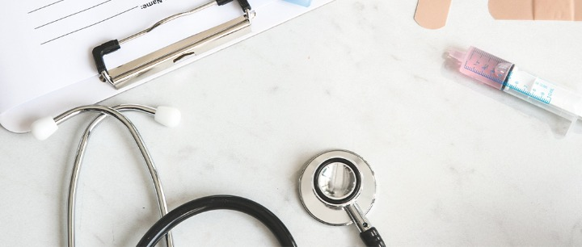
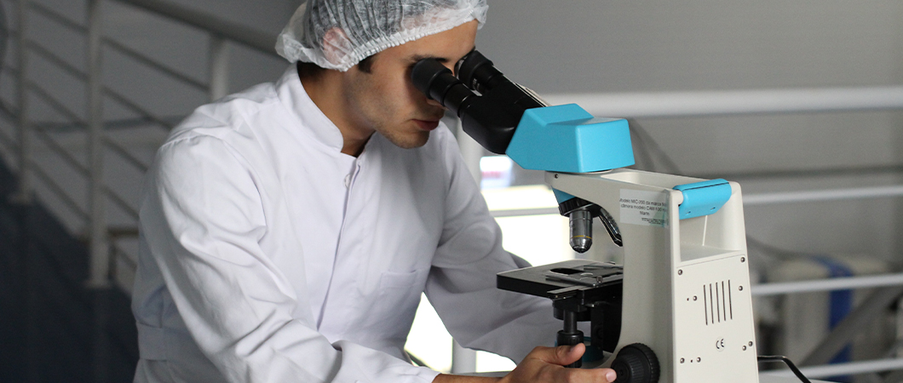
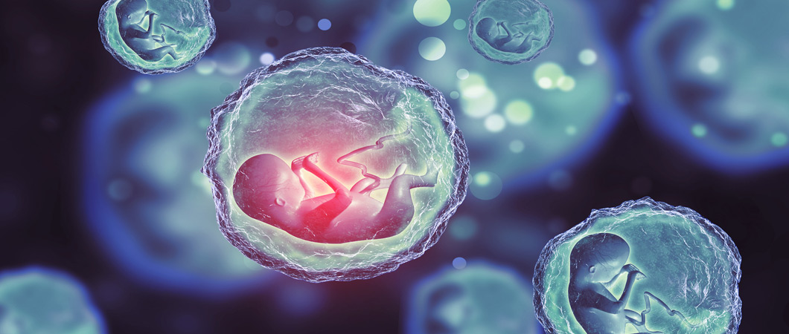
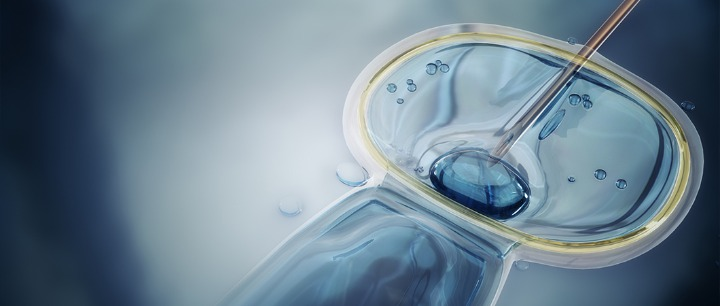

علاج العقم وأطفال الأنابيب في تركيا
غالباً ما يعود سبب تأخّر الحمل والإنجاب إلى مشاكل في جسم الرجل أو المرأة أو كليهما، حيث يقوم الأطباء بعمل فحوصات وتحاليل عند كلا الزوجين للوصول إلى السبب
علاج العقم وأطفال الأنابيب في تركيا
جدول المحتويات
ما هي الأسباب التي تؤخر الحمل أو تؤثر على الخصوبة ؟
يعود السبب غالباً إلى مشاكل في جسم الرجل أو المرأة أو كليهما، وعندما تحدُث مثل هذه المشاكل، يقوم الأطباء بعمل فحوصات وتحاليل عند كلا الزوجين، محاولين اكتشاف السبب.
لماذا يتوجب مراجعة الطبيب في حال تأخر الحمل ؟
ينصح معظم الأطباء أن يقوم الزوجان بمراجعة الطبيب، وإجراء التحاليل عند تأخر الحمل، بعد مرور سنة من الزواج، ولكن في حال أصابك القلق للتأخّر، بإمكانك استشارة الطبيب حتى قبل مرور هذه المدّة، فلربما ينصحك بإجراء تحليل أو أكثر، ولكن في الغالب يُنصح ببدء التحليل قبل مرور سنة على الزواج في النساء اللواتي بلغت أعمارهنَّ الخامسة والثلاثين عاماً، وأيضاً النساء اللواتي يعانين من دورة شهرية غير منتظمة.

ما الفحوصات التي يتم إجراؤها للزوج؟
ينصح الطبيبُ أحياناً، بعد التأكد من تاريخ الزوج الصحي، بإجراء تحليل للسائل المنوي، ويتضمّن هذا الفحص معرفة عدد الحيوانات المنوية التي ينتجها الرجل، ومدى سلامة هذه الحيوانات وصحَّتها.
فحوصات أخرى قد تلزم أحياناً
- تحاليل الدم، تكشف بعض فحوصات الدم عن مستوى الهرمونات عند الرجل، حيث يسبب وجود مستويات غير طبيعية من هذه الهرمونات في الدم مشاكل في حدوث الحمل عند الزوجة. كما تُستخدم تحاليل الدم لفحص الجينات التي قد تسبِّب العقم
- التصوير بالأمواج فوق الصوتية، أو الالتراساوند، لداخل جسم الإنسان؛ للكشف عن أي مشاكل تشريحية، حيث يعاني بعض الرجال من انسداد في الوعاء الناقل للحيوانات المنوية.
- فحص البول قد تكشف فحوصات البول أحياناً عن تحرك الحيوانات المنوية في الاتجاه الخاطئ، حيث تذهب باتجاه المثانة بدلاً من الاتجاه الصحيح خارج الجسم. خزعة، أو عيِّنة إن لم يحتوِ تحليل السائل المنوي على أيّ حيوانات منوية، أو احتوى على كميات قليلة منها، قد يحتاج الرجل لخزعة لفحصها، حيث يأخذ الطبيب كمية صغيرة من النسيج داخل الخصيتين، لفحصها تحت المجهر أو الميكروسكوب، للتأكد إن كان الجسم يصنع الحيوانات المنوية أم لا.
ما الفحوصات التي قد تحتاجها النساء؟
بعد تحرّي التاريخ الصحي للزوجة، وتفاصيل دورتها الشهرية ورتابتها، قد تحتاج للقيام ببعض الفحوصات أو التحاليل، منها:
- فحوصات الدم: لقياس مستويات هرمونات الأنثوية في الدم، فالمستويات غير الطبيعة من تلك الهرمونات قد تمنع حدوث حمل عند الزوجة، كما يتم إجراء فحوصات لبعض الأمراض الجينية المسبِّبة للعقم.
- فحوصات التبويض: وهي عبارة عن فحوص كثيرة ومتعددة، لمعرفة إن كانت الزوجة تقوم بعملية التبويض، أو إخراج البويضات من المبايض بلا مشاكل، لتدخل في الأنبوب الموصل إلى الرحم، وهي العملية الأهم التي تؤدي لحدوث الحمل.
- فحوصات للتأكّد من سلامة الرحم والأنابيب الموصلة إليه، والتي تُعرف بأنابيب فالوب، حيث إن المشاكل في تلك الأنابيب والرحم، من أهم مسبِّبات العقم ومشاكل الحمل.
والفحوصات التي تساعد على معرفة ذلك هي:
الالتراساوند، أو التصوير الطبي بالأشعة فوق الصوتية، أو غيرها من الفحوصات الأخرى، لتكوين صورة عن داخل الجسم، ومعرفة إن كانت هناك عيوب خَلقية في الرحم، مثل: انسداد في أنبوب فالوب، والذي قد ينتج بسبب التهابات مزمنة أو عمليات سابقة، أو أي مشكلات أخرى.
لا تعتبر هذه الفحوصات سهلة، كما هو الحال في التصوير بالأشعة، فهي تتضمن عمليات صُغرى، فمثلاً قد يضطر الطبيب إلى القاء نظرة على داخل الرحم، باستخدام أنبوب صغير مزود بكاميرا عبر المهبل، أو باستخدام أنبوب رفيع عبر فتحة صغيرة من الجلد، لفحص تجويف البطن والرحم من الخارج.
ماذا يحدث بعد إجراء تلك الفحوصات؟
قد تكشف نتائج الفحوصات وجود مشكلة، وفي هذه الحالة يقوم الطبيب بترتيب نظام علاجي لها.
وقد تعجز التحاليل والفحوصات رغم كل ذلك عن تشخيص المشكلة، وفي هذه الأحوال هناك وسائل علاجية أخرى قد يستخدمها الطبيب لمساعدة الزوجين على الإنجاب.
مواجهة مشكلة العقم قد تسبّب ضغطاً نفسياً شديداً للزوجين، ومن الطبيعي الشعور بالحزن والقلق، ولكنّ الأهم من ذلك أن تُوضع هذه المشاعر جانباً، وأن تحاول أن تعالج المشكلة، بالحديث مع الطبيب أو المستشار النفسي.

التشخيص وترتيب الخطة العلاجية
من أهم الخطوات لحل مشاكل العقم والخصوبة؛ التوصل إلى تشخيص طبي واضح، ومن ثم وضع خطة علاجية للمشكلة بحسب ذلك التشخيص، وبالتفاهم مع الزوجين يتم اختيار الطريقة الأنسب للعلاج، وترتيب رحلة علاجية لتركيا إن تطلَّب الأمر ذلك.
علاج العقم في علاجك الطبية في تركيا
دعينا نساعدكفي تحقيق حلمك في الأمومة والإنجاب، في مراكز الإخصاب الصناعي والأجنَّة، في علاجك الطبية.
حيث يتكوّن فريقنا للإخصاب الصناعي من مجموعة من أطباء الخصوبة والأجنّة والنساء والولادة واختصاصيي الغدد الصم، يعملون كفريق واحد، بهدف تقديم أفضل خدمة ممكنة للأزواج، لمساعدتهم على الحمل والإنجاب، بخبرة طويلة تنصبُّ خلاصتها لعمل برامج علاجية متكاملة، وبشكل فردي لكلّ زوج.
تقدم علاجك الطبية في تركيا العديد من العلاجات والطرق لعلاج العقم ومشاكل الإنجاب بأحدث الوسائل العلمية، وبأعلى جودة ممكنة للوصول إلى أفضل النتائج، من استشارة مجانية، وترتيب رحلتكم العلاجية إلى تركيا، حيث نكون معكم ونرافقكم في جميع مراحل علاجكم. نوفر لكم أحدث التقنيات والعلاجات المعروفة عالمياً لعلاج مشاكل الخصوبة والإنجاب، ومنها:
- الإخصاب داخل الرحم.
- الإخصاب داخل الأنبوب (أطفال الأنابيب)
- حقن الحيوان المنوي داخل السيتوبلازم .
- الفحص الجيني وتشخيص الأمراض ما قبل زراعة الجنين.
أطفال الأنابيب
عبارة عن سلسلة معقدة من الإجراءات المستخدمة للمساعدة في الإخصاب أو لمنع المشاكل الوراثية والمساعدة في إنجاب الطفل.

طريقة عمل طفل الأنابيب
بعد الدورة الشهرية يتم
- أولاً: تحفيز المبيضين
- ثانياً: جمع البويضات الناضجة من المبيضين
- ثالثاً: تخصيبها بواسطة الحيوانات المنوية في المختبر.
- رابعاً: يتم نقل البويضة المخصبة إلى الرحم.
تستغرق دورة عمل أطفال الأنابيب الكاملة حوالي ثلاثة أسابيع وفي بعض الأحيان يتم تقسيم هذه الخطوات إلى أجزاء مختلفة ويمكن أن تستغرق العملية وقتاً أطول.
كم نسبة نجاح عملية اطفال الانابيب
على سبيل المثال، لدى المرأة التي تقل عن 35 عاماً وتخضع لعمليات التلقيح الصناعي فرصة 39.6 ٪ لإنجاب طفل، في حين أن المرأة التي تزيد عن 40 عاماً لديها فرصة 11.5 ٪.
ومع ذلك، وجدت مراكز مكافحة الأمراض والوقاية مؤخرًا أن معدل النجاح يزداد في كل فئة عمرية حيث يتم تحسين التقنيات ويصبح الأطباء أكثر خبرة.
ووفقاً لدراسة واحدة على الأقل، فإن احتمالات النجاح -للنساء من جميع الأعمار -بعد ثلاث دورات IVF تتراوح بين 34 و42 بالمائة من الناحية العملية، لتحسين احتمالاتك يجب أن تجرب ثلاث دورات أطفال الأنابيب على الأقل.
يمكنكم من خلال التواصل معنا الحصول على تقييم لحالتكم وتقديم الاستشارة الأفضل.
الفرق بين أطفال الأنابيب والأطفال الطبيعيين
الفرق الوحيد بين أطفال الأنابيب والأطفال الطبيعين هو أنه في حالة أطفال الأنابيب يتم تخصيب الحيوانات المنوية والبيض في المختبر تحت إشراف الأطباء ويحدث الإخصاب في أنبوب الاختبار بدلاً من قناة فالوب.
أما بالنسبة للأطفال أنفسهم فالغالبية العظمى من الدراسات حتى الآن تشير إلى نمو الأطفال بشكل طبيعي.
ويرجع عامل الخطر الرئيسي في مشاكل نمو الأطفال إلى الولادة المبكرة بشكل أكثر شيوعاً في حالات الحمل المتعددة (التوائم وما إلى ذلك).
هل طفل الانابيب عقيم
لا. لا يبدو أن معدل حدوث العقم عند البالغين المولودين نتيجة التلقيح الصناعي (أطفال الأنابيب) يزيد.
أحد الاستثناءات المحتملة لهذا هو الرجال الذين ولدوا بعد الحقن المجهري لأن والدهم كان ضعيفاً جداً في نوعية الحيوانات المنوية.
مما يشير إلى أنهم ورثوا ذلك من والدهم في بعض الحالات، نحن بحاجة إلى مزيد من البيانات لتأكيد هذه الملاحظة الأولية بالرغم من ذلك.
تكاليف عملية أطفال الأنابيب في تركيا
تتميز تركيا بمستوى عال في الخدمات الطبية والبينة التحتية للمستشفيات والخبرة الواسعة لأطبائها، كل ذلك وأكثر بأسعار منافسة ومقبولة بالإضافة الى أماكن الاستجمام والراحة والسياحة بعد أو قبل العملية.
تواصلو معنا لتقييم حالتكم وتقديم أفضل خطة علاجية بأسعار تنافسية.
الحقن المجهري
التلقيح المجهري هو إجراء للتخصيب في المختبر، يتم فيه حقن خلية منوية واحدة مباشرة في البويضة، حيث تستخدم هذه التقنية من أجل إعداد الأمشاج للحصول على الأجنة، التي يمكن نقلها إلى رحم الأم.
اقرأ اكثر عن الحقن المجهري : عملية الحقن المجهري في تركيا ومراحلها

الفرق بين أطفال الأنابيب والحقن المجهري
الفرق الرئيسي بين اطفال الانابيب و الحقن المجهري هو كيف يقوم الحيوان المنوي بتخصيب البويضة.
ففي أطفال الأنابيب، تُترك البويضة والحيوانات المنوية في طبق للتخصيب من تلقاء نفسها.
أما في الحقن المجهري، يتم حقن حيوان منوي واحد مباشرة في البويضة.
بمعنى اخر في الحقن المجهري يتم حقن كل بويضة بشكل فردي بحيوان منوي واحد ، بينما في أطفال الأنبابيب يتعين على الحيوان المنوي اختراقها بشكل طبيعي.

يعتمد علاج العقم عند الرجال على العامل المسبب لمشكلة العقم.
عادة ما تكون الأدوية ذات فعالية في الحالات التي يكون فيها اضطراب هرموني، أو اضطراب في أداء الوظيفة الجنسية.
ويمكن للجراحة أن تساعد في حالات كثيرة، مثل الانسداد، واحتقان أوردة الخصية. المعدل الموصى به هو من اثنين إلى ثلاثة لزيادة احتمالية إنتاج أكبر عدد ممكن من الأجنة الملقحة. حذر العالم باسكال غاغنكس من أن الأطفال المولودين باستخدام تقنية الإخصاب الصناعي (أطفال الأنابيب) قد يعيشون لفترة أقل ويكونون بصحة أسوأ في مراحل لاحقة في حياتهم مقارنة بغيرهم من المولودين طبيعياً. تستغرق دورة أطفال الأنابيب الكاملة نحو ثلاثة أسابيع، ويمكن أن تستغرق وقتًا أطول. يختلف علاج العقم الثانوي باختلاف سبب حدوثه، يقوم الطبيب المختص بعمل الفحوصات اللازمة لتحديد سبب حدوث العقم الثانوي، وبناء عليه يحدد العلاج الأنسب. وفقًا للدراسة وبحسب أحد رواد العالم في الطب التناسلي، فإن هناك فرصة جيدة لإنجاب طفل ثانٍ بمساعدة علاجات الخصوبة بعد ولادة الطفل الأول بهذه الطريقة. تشير غالب الدراسات حتى الآن إلى أن النمو طبيعي عند الأطفال الرضع الذين تم حملهم من خلال التلقيح الاصطناعي.
يرجع عامل الخطر الرئيس في مشاكل نمو الرضع إلى الولادة المبكرة الأكثر شيوعًا في حالات الحمل المتعددة (التوائم وما إلى ذلك). خلال عملية أطفال الأنابيب، يتم جمع (استرداد) البويضات الناضجة من المبايض وتخصيبها بالحيوانات المنوية في المختبر.
ثم تُنقَل البويضة الملقحة (الجنين) أو البويضات (الأجنة) إلى الرحم.
تستغرق الدورة الكاملة للتلقيح الصناعي نحو ثلاثة أسابيع، وفي بعض الأحيان تُقسَم هذه الخطوات إلى أجزاء مختلفة، وقد تستغرق العملية وقتاً أطول. تتراوح الأسعار بين ثلاثة آلاف دولار إلى سبعة آلاف دولار، باختلاف الحالة والبرنامج العلاجي. عدد كبير من حالات الحمل انتهت بولادة طبيعية، ولكن يفضل معاملتهم كحالات خاصة عالية الخطورة. لا يختلف الحمل بطفل الأنابيب عن الحمل الطبيعي من حيث جمالية الطفل. لا، لا علاقة لضعف الخصوبة لدى البالغين المولودين نتيجةً لعمليات التلقيح الصناعي بعمليات أطفال الأنابيب .
أحد الاستثناءات المحتملة لهذا هو الرجال الذين حُمِلوا بعد الحقن المجهري، لأن والديهم كانوا يعانون من ضعف شديد في جودة الحيوانات المنوية. أكدت دراسة حديثة فحصت الأداء الأكاديمي لأطفال الأنابيب أنهم أذكياء مثل أقرانهم الذين تم إنجابهم طبيعياً، إذ إنهم ليسوا أطفالًا فائقي الذكاء، وليسوا أقل ذكاءً. استناداً إلى البيانات المتاحة حالياً، قد يكون أطفال التلقيح الاصطناعي أكثر عرضة لخطر الإصابة بعيوب خلقية (التشوهات الخلقية). نعم، لا يبدو أن معدل الإصابة - بضعف الخصوبة – يزداد عند البالغين الذين ولدوا نتيجة لعمليات التلقيح الصناعي. نعم، لا يبدو أن معدل الإصابة - بضعف الخصوبة – يزداد عند البالغين الذين ولدوا نتيجة لعمليات التلقيح الصناعي. نعم، لا يبدو أن معدل الإصابة - بضعف الخصوبة – يزداد عند البالغين الذين ولدوا نتيجة لعمليات التلقيح الصناعي.
أحد الاستثناءات المحتملة لهذا هو الرجال الذين حُمِل بهم بعد الحقن المجهري لأن آباءهم يعانون من ضعف جودة الحيوانات المنوية يمكنك توقع نزول الدورة من اثني عشر إلى ستة عشر يومًا بعد نقل الجنين / الكيسة الأريمية.
كما يمكن أن يحدث النزيف المهبلي أيضاً عندما تحاول الأجنة / الكيسة الأريمية الالتصاق بالرحم. إذا لم تنجح دورة الإخصاب في المختبر لديك وتريد المحاولة مرة أخرى، فلن تضطر إلى الانتظار طويلاً؛ إذ إن معظم العيادات ستوصي بالانتظار حتى تكون دورة شهرية واحدة للمحاولة مرة أخرى.
يقترح البعض أنه من الجيد الانتظار لفترة أطول من ذلك، ولكن أظهرت الأبحاث أن الانتظار ليس ضروريًا. للنساء: ابدئي بتناول الفيتامينات وحمض الفوليك ثلاثين يومًا قبل أن تبدأ دورة أطفال الأنابيب .
هذه المكملات مهمة للغاية، لأنها تقي من العيوب الخلقية في الدماغ والعمود الفقري عند نمو الأجنة.
للرجال: يمكن أن يساعد تناول الفيتامينات قبل الولادة على تعزيز صحة الحيوانات المنوية. أثناء استخراج البويضات، سيتم إعطاؤك مسكنات للألم ومهدئات، لذلك يجب ألا يكون الإجراء نفسه مؤلماً على الإطلاق.
بعد الإجراء، قد تكون هناك بعض التقلصات الخفيفة أو الشعور بالضغط.
يمكن علاج الألم عادةً بأدوية لا تستلزم وصفة طبية مثل الإيبوبروفين. إذا قرر طبيبك المتخصص، بعد الاستشارة الأولية (التحاليل والتشخيص) أن التلقيح الاصطناعي هو الخيار الأفضل لك، فإليك الخطوات المعتادة التي سيتبعها العلاج:
الخطوة الأولى: بدء العلاج.
الخطوة الثانية: تنشيط المبيض.
الخطوة الثالثة: سحب البويضات وجمع السائل المنوي.
الخطوة الرابعة: الإخصاب (التلقيح) ونمو الجنين.
الخطوة الخامسة: نقل الأجنة.
الخطوة السادسة: اختبار الحمل. الغالبية العظمى من هؤلاء الأطفال يتمتعون بصحة جيدة.
ومع ذلك، استناداً إلى البيانات المتاحة حالياً، قد يكون أطفال الأنابيب أكثر عرضة لخطر الإصابة بالعيوب الخلقية.

أسئلة متكررة حول علاج العقم عبر أطفال الأنابيب
هل لديك إستفسار : تواصل معنا - الإستشارة مجانية
علاجك الطبية .. لتكن الصحة تاجك.